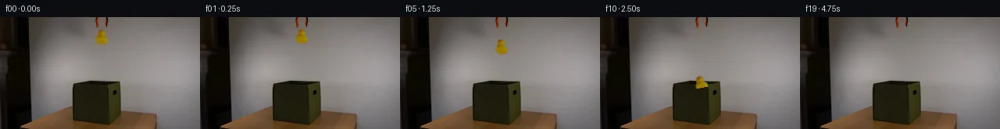
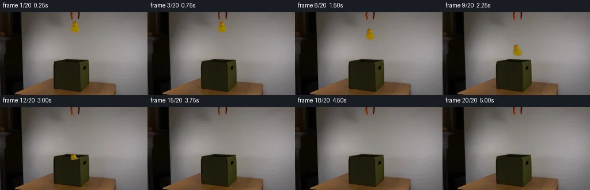
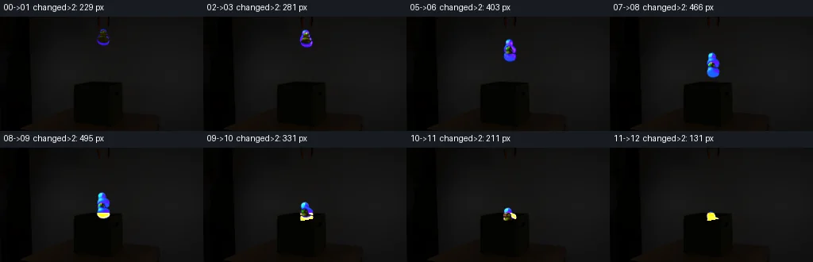

V0 · 初版 · 最终提交
![]()
Observable Generation Trace
把最终像素视频、Harness 冻结的每轮候选、真实工具事件和 Agent 自述放在同一页。可观测证据与模型自述分开标记，避免把“模型说它检查过”误当成真实工具调用。
![首帧]()
Static locked-off single-shot with fixed frame throughout filmed with constant framerate in real-time. The scene shows a realistic scientific demonstration. The scene only contains the described setup and actions. An orange-black grabber tool is suspended above the open dark green fabric box on a wooden table. The orange-black grabber tool releases the yellow rubber duck above the open dark green fabric box.
首帧显示在左侧播放器初始画面。Track 权限、隔离和 tensor 一致性来自 run manifest，而不是 METHOD.md。
默认勾选初版和最终版；可选其他版本一起同步播放。仅检查图更新的连续重复快照已合并，回退旧视频仍保留为一次修订。
Observable events
来源：events.jsonl + run manifest
视觉工具可用，但 events.jsonl 没有记录到成功的输出 PNG 读取；存在 self-refine 候选，不等于存在可验证的视觉 self-refine。
Frozen candidates
每张图来自该 round 的真实 00 / 01 / 05 / 10 / 19 帧

pixels ec0081efaa85f004 · code 3c77c63bd85109a5
--- previous/generate.py
+++ current/generate.py
@@ -0,0 +1,224 @@
+#!/usr/bin/env python3
+"""Generate the 20-frame locked-camera rubber-duck drop sequence."""
+
+from pathlib import Path
+
+import numpy as np
+from PIL import Image, ImageDraw, ImageFilter
+
+import artifact_io
+
+
+ROOT = Path(__file__).resolve().parent
+W, H = 256, 144
+
+
+def repair_initial_duck(base: Image.Image) -> Image.Image:
+ """Make a clean wall plate by replacing only the initial duck footprint."""
+ src = np.asarray(base).astype(np.float32)
+ fill = src.copy()
+
+ # The wall is extremely smooth. Interpolate each affected scanline from
+ # uncontaminated wall samples on both sides of the duck.
+ x0, x1 = 116, 145
+ for y in range(14, 43):
+ left = src[y, x0]
+ right = src[y, x1]
+ for x in range(x0, x1 + 1):
+ u = (x - x0) / (x1 - x0)
+ fill[y, x] = left * (1.0 - u) + right * u
+
+ mask = Image.new("L", (W, H), 0)
+ d = ImageDraw.Draw(mask)
+ # This stays below the grabber jaws, whose last colored pixels end near 14.
+ d.ellipse((118, 15, 142, 42), fill=255)
+ mask = mask.filter(ImageFilter.GaussianBlur(2.1))
+ repaired = Image.composite(Image.fromarray(fill.astype(np.uint8)), base, mask)
+ return repaired
+
+
+def extract_duck(base: Image.Image, plate: Image.Image) -> Image.Image:
+ """Extract a soft RGBA sprite from the photographed duck."""
+ box = (116, 14, 145, 43)
+ obs = np.asarray(base.crop(box)).astype(np.float32)
+ bg = np.asarray(plate.crop(box)).astype(np.float32)
+ r, g, b = obs[..., 0], obs[..., 1], obs[..., 2]
+
+ # Rubber yellow/orange chroma plus deviation from the repaired wall.
+ yellow = ((r + g) * 0.5 - b - 9.0) / 60.0
+ orange = (r - (g + b) * 0.5 - 13.0) / 55.0
+ deviation = np.max(np.abs(obs - bg), axis=2) / 68.0
+ alpha = np.clip(np.maximum.reduce((yellow, orange, deviation)), 0.0, 1.0)
+
+ # Exclude the upper jaw area and suppress isolated tiny residuals.
+ alpha[:2, :] = 0.0
+ alpha[alpha < 0.08] = 0.0
+ a_img = Image.fromarray((alpha * 255).astype(np.uint8)).filter(
+ ImageFilter.GaussianBlur(0.55)
+ )
+ rgba = Image.fromarray(obs.astype(np.uint8)).convert("RGBA")
+ rgba.putalpha(a_img)
+ return rgba
+
+
+def rim_height(x: float) -> float:
+ """Front edge of the open fabric box, measured from the source frame."""
+ if x <= 111.0:
+ return 86.0 + (x - 94.0) * (8.0 / 17.0)
+ return 94.0 - (x - 111.0) * (8.0 / 43.0)
+
+
+def add_opening_shadow(frame: Image.Image, duck_y: float) -> Image.Image:
+ """Add the faint, increasingly compact shadow of the falling duck."""
+ proximity = np.clip((duck_y - 51.0) / 38.0, 0.0, 1.0)
+ if proximity <= 0:
+ return frame
+
+ shadow = Image.new("RGBA", (W, H), (0, 0, 0, 0))
+ sd = ImageDraw.Draw(shadow)
+ rx = 11.0 - 4.0 * proximity
+ ry = 3.2 - 1.2 * proximity
+ opacity = int(10 + 35 * proximity)
+ sd.ellipse((130 - rx, 88 - ry, 130 + rx, 88 + ry), fill=(0, 0, 0, opacity))
+ shadow = shadow.filter(ImageFilter.GaussianBlur(2.0 - 0.7 * proximity))
+
+ opening_mask = Image.new("L", (W, H), 0)
+ ImageDraw.Draw(opening_mask).polygon(
+ [(94, 86), (113, 82), (154, 85), (111, 94)], fill=255
… diff truncated; 137 more lines …Final visual checks
Harness 保存的最终产物


Agent claims
以下文字由生成 Agent 撰写，不等同于工具证据
first_frame.png, RGB, 256 x 144 pixels. The camera is static.| Frame | Time | Planned event |
|---|---|---|
| 00 | 0.00 s | Exact source image; duck just below the open grabber. |
| 01 | 0.25 s | Release begins; duck remains almost stationary for a readable hold. |
| 02 | 0.50 s | Duck starts downward, about 1 px lower. |
| 03 | 0.75 s | Downward acceleration becomes visible; slight clockwise pitch. |
| 04 | 1.00 s | Duck falls through the upper wall area. |
| 05 | 1.25 s | Continued accelerating fall with subtle motion softness. |
| 06 | 1.50 s | Duck crosses roughly y=50. |
| 07 | 1.75 s | Duck approaches the box; its soft shadow begins to strengthen on the opening. |
| 08 | 2.00 s | Duck is just above the box opening. |
| 09 | 2.25 s | Duck reaches the opening; the lower body nears the front rim. |
| 10 | 2.50 s | Duck passes behind the front rim and is partially occluded. |
| 11 | 2.75 s | Only the uppermost yellow portion remains briefly visible inside the dark opening. |
| 12 | 3.00 s | Duck has dropped fully into the box and is hidden. |
| 13 | 3.25 s | Empty opening; grabber stays suspended and open. |
| 14 | 3.50 s | Static settled scene. |
| 15 | 3.75 s | Static settled scene. |
| 16 | 4.00 s | Static settled scene. |
| 17 | 4.25 s | Static settled scene. |
| 18 | 4.50 s | Static settled scene. |
| 19 | 4.75 s | Final static view: duck remains contained inside the box. |
The motion uses a monotonic, accelerating vertical trajectory, mild rotation, a proximity-dependent soft shadow, and geometric rim occlusion. There is no camera movement or unrelated scene change.
The sequence is generated entirely with deterministic local Python pixel operations using Pillow and NumPy. No external images, models, masks, engines, or network resources are used.
first_frame.png is loaded as RGB and copied without modification into frame 00.artifact_io.save writes the PNG sequence, packed uint32 0xRRGGBB tensor, inspection sheet, and standalone player. generate.py additionally creates an amplified adjacent-frame transition sheet and reloads every PNG to verify exact equality with both the in-memory RGB frames and pixels.npz.